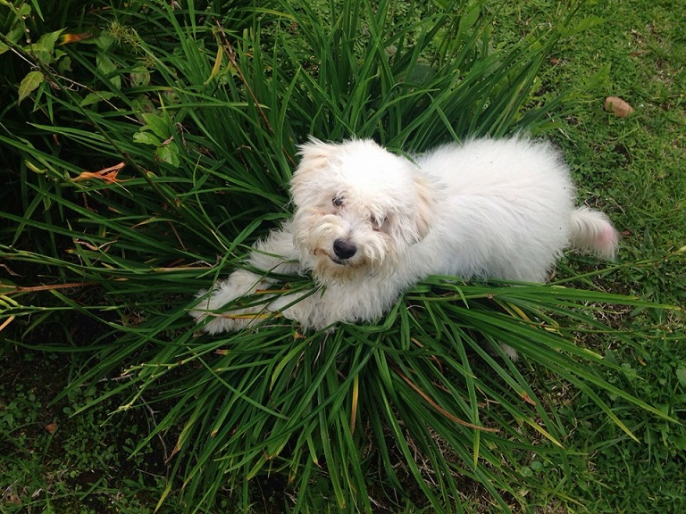
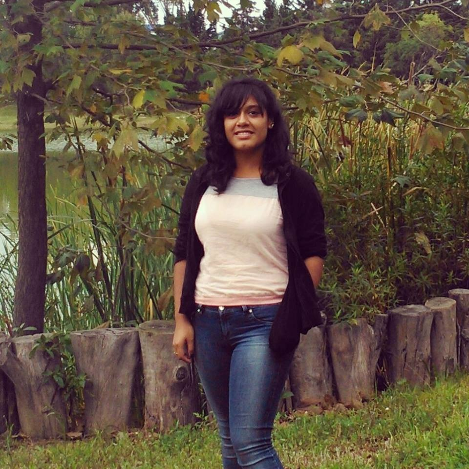
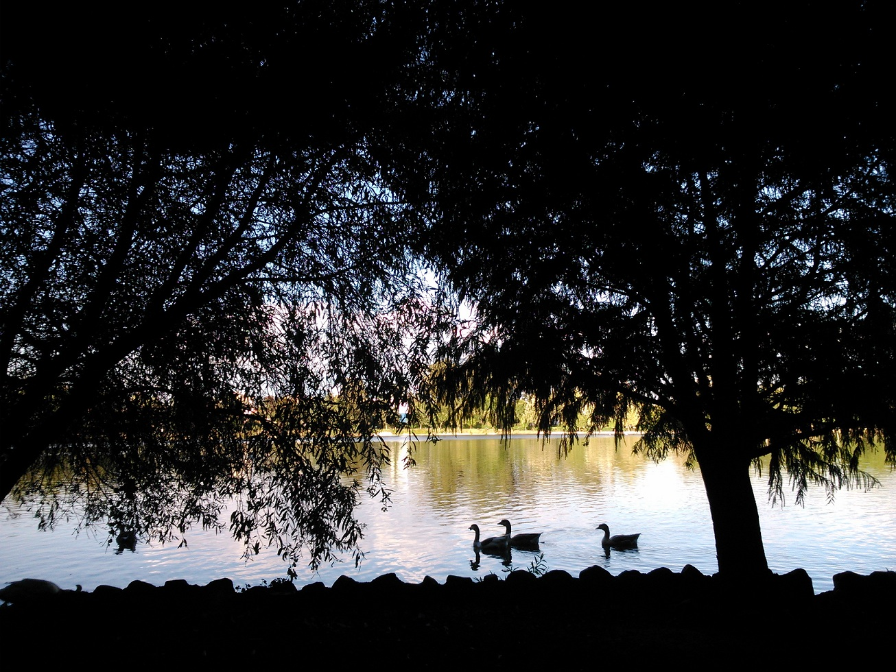

-Vivo en XICOTEPEC DE JÚAREZ
puebla el cual es un pueblo en
la sierra norte del estado a 3 horas de puebla capital
-Tengo un perrito french pool de 8 meses.

-Vivo con mi mama, mi hermana y mi abuelita.
-Mi papa fallecio el 14 de febrero del 2015.
-Soy morena, un poco gordita, altura media, cabelo ondulado y ojos grandes y cafes.

-Actualmente curso el 5to semestre de mi carrera en ing. en tecnologias de la información
en la Benemerita Universidad Autonoma de Puebla
-Entre mis pasatiempos preferidos esta la fotografia y el dibujo.
